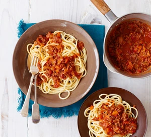

The best spaghetti bolognese recipe

Description
Our best ever spaghetti bolognese is super easy and a true Italian classic
with a meaty, chilli sauce. This recipe comes courtesy of BBC Good Food
user Andrew Balmer
Ingredients
- 1 tbsp olive oil
- 4 rashes smoked streaky bacon, finely chopped
- 2 medium onions, fonely chopped
- 2 carrots. trimmed and finely chopped
- 2 celery sticks, finely chopped
- 2 garlic cloves, finely chopped
- 2-3 sprigs rosmary leaves picked and finely chopped
- 500g beef mince
For the bolognese sauce
- 2 x 400g tins plum tomatoes
-
small pack basil leaves picked, 3/4 finely chopped and the rest left
whole for garnish
- 1 tsp dried oregano
- 2 fresh bay leaves
- 2 tbsp tomato puree
- 1 beef stock cube
- 1 red chilli deseeded and finely chopped (optional)
- 125ml red wine
- 6 cherry tomatoes chopped in half
To season and serve
- 75g parmesan grated, plus extra to serve
- 400g spaghetti
- cursty bread to serve (optional)
Steps
- Put a large saucepan on a medium heat and add 1 tbsp olive oil.
-
Add 4 finely chopped bacon rashers and fry for 10 mins until golden and
crisp.
-
Reduce the heat and add the 2 onions, 2 carrots, 2 celery sticks, 2
garlic cloves and the leaves from 2-3 sprigs rosemary, all finely
chopped, then fry for 10 mins. Stir the veg often until it softens.
-
Increase the heat to medium-high, add 500g beef mince and cook stirring
for 3-4 mins until the meat is browned all over.
-
Add 2 tins plum tomatoes, the finely chopped leaves from ¾ small pack
basil, 1 tsp dried oregano, 2 bay leaves, 2 tbsp tomato purée, 1 beef
stock cube, 1 deseeded and finely chopped red chilli (if using), 125ml
red wine and 6 halved cherry tomatoes. Stir with a wooden spoon,
breaking up the plum tomatoes.
-
Bring to the boil, reduce to a gentle simmer and cover with a lid. Cook
for 1 hr 15 mins stirring occasionally, until you have a rich, thick
sauce.
- Add the 75g grated parmesan, check the seasoning and stir.
-
When the bolognese is nearly finished, cook 400g spaghetti following the
pack instructions.
-
Drain the spaghetti and either stir into the bolognese sauce, or serve
the sauce on top. Serve with more grated parmesan, the remaining basil
leaves and crusty bread, if you like.